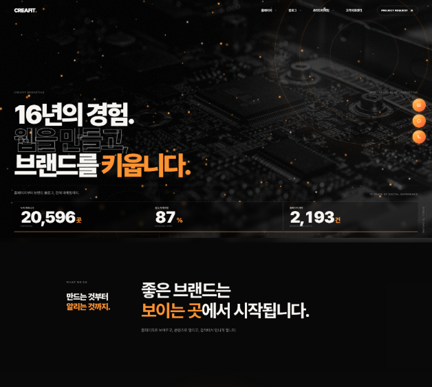
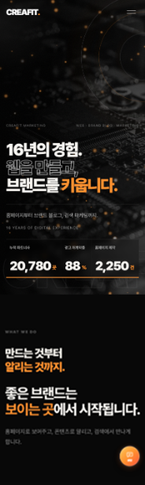

CONTENT / OPERATIONWORDS
WITH PURPOSE.
01 / WEBSITE RENEWAL
기업 홈페이지
기업 홈페이지
전면 리뉴얼
크레아핏마케팅
노후화된 디자인과 콘텐츠를 전반적으로 재정비하고, 기존 고객 구성과 서비스 특성을 고려해 필요한 정보를 쉽게 탐색할 수 있도록 설계했습니다.
스크롤이 만드는 브랜드 경험
GSAP 스크롤 모션 · 화면 전환 애니메이션

